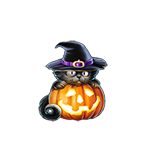

Получено: файл; исходный URL. Исходный файл без перекодирования с альтернативного хоста; совпадение байтов с оригинальной ссылкой не проверено. Страница: источник.


Хэллоуин 2014 — подарок
историческая браузерная социальная игра; платформа и редакция уточняются- Тип
- Подарок
- Версия и дата
- историческая браузерная социальная игра; платформа и редакция уточняются
Данные по источнику · браузерная игра; платформа не уточнена · октябрь 2014 — дата статьи; дата поздних правок не установлена
Предварительно: Фанатский источник; возможны ошибки, разночтения и изменения редакций.. Требуется сверка.
- Получение
- По статье получали игроки, вошедшие 30 октября 2014; купить, подарить и продать нельзя.
- Содержимое и оговорка
- На странице перечислены коллекция Хэллоуин, трезубец, изумрудное сердце, Чертёнок, монеты и опыт. В заголовке перечня написано «Хэллоуин 2015», хотя название, описание и дата относятся к 2014; вероятная опечатка, но связь перечня с подарком 2014 не доказана независимо.
Связанные сущности
- Трезубец — инструмент островов — возможный приз